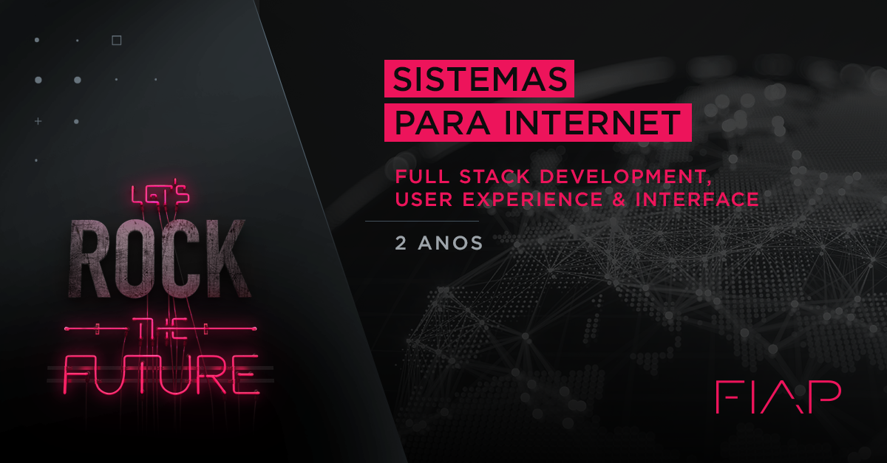

Cursos da Fiap

Pensar de uma forma digital não é mais uma tendência: é uma estratégia de inovação e de geração de negócios. O acesso à Internet banda larga aumentou 55% em 2015, totalizando 133,7 milhões de acessos, segundo a Telebrasil. Números que ampliam a importância de um tecnólogo não só voltado para a Internet, mas que também domine as novas tecnologias e metodologias que estão surgindo. Neste cenário, a palavra de ordem é: Transformação Digital. Ou ampliar a interação entre cliente e empresa, repensando modelos de negócio com foco na experiência e na continuidade da relação humana, promovendo assim a integração entre os meios físico e digital. Tecnologia em Sistemas para Internet prepara você para criar experiências omnichannel e desenvolver plataformas tecnológicas que apoiem o processo de transformação digital do mercado
Pensar de uma forma digital não é mais uma tendência: é uma estratégia de inovação e de geração de negócios. O acesso à Internet banda larga aumentou 55% em 2015, totalizando 133,7 milhões de acessos, segundo a Telebrasil. Números que ampliam a importância de um tecnólogo não só voltado para a Internet, mas que também domine as novas tecnologias e metodologias que estão surgindo. Neste cenário, a palavra de ordem é: Transformação Digital. Ou ampliar a interação entre cliente e empresa, repensando modelos de negócio com foco na experiência e na continuidade da relação humana, promovendo assim a integração entre os meios físico e digital. Tecnologia em Sistemas para Internet prepara você para criar experiências omnichannel e desenvolver plataformas tecnológicas que apoiem o processo de transformação digital do mercado